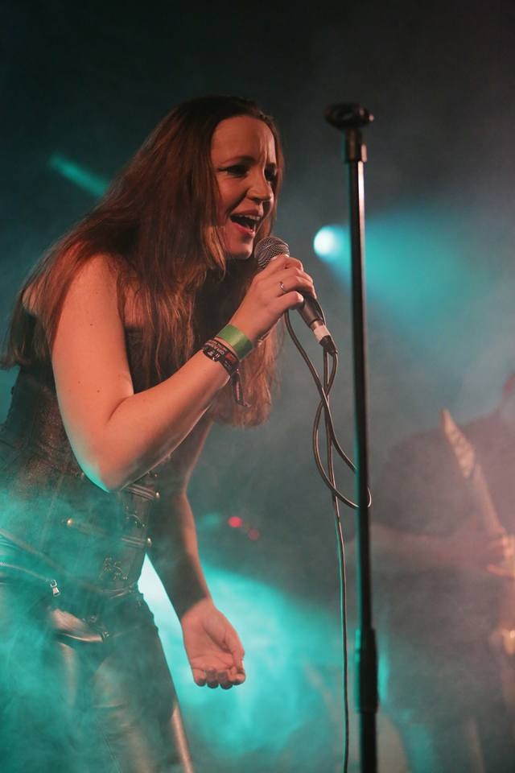

Musicians
-
Jeroen Schaafsma
Guitar
Vocals
Singer/songwriter
Netherlands
Started playing guitar at the age of 12. Influenced by early Country music and Dutch folk groups. Taking guitar lessons from Guus Bos back in 1984 for about 5 years. Got into songwriting when I was around 16 and soon started a local rock band called Fatally flawed. For this band I was the main songwriter. I’ve played mainly leadguitar for several bands and started Mane Attraction around 2000. After 2012 I went back more to my roots and writing songs as a singer/songwriter for my project: Mane Attraction
-

Inge Rijnja
Vocals
Netherlands
...
-

Michael Rinne
Bass
Nashville, TN
Originally from Arkansas but now a resident of Nashville, TN, Michael Rinne has played bass for some of the finest songwriters and musicians in the world. His list of studio credits include; Jack White, Alicia Keys, Caitlin Rose, Andrew Combs, Rayland Baxter, Jesse Baylin, Chester Thompson, and Steelism. In 2015-16 Michael joined Emmylou Harris and Rodney Crowell touring the world in support of their album ‘The Traveling Kind.’ During the same period he also toured with legendary fiddler Mark O’Connor. In the spring of 2017 Michael joined Miranda Lambert’s band for her “Highway Vagabond” tour. 2018 will see Michael traveling far and wide on Miranda’s “Livin’ Like Hippies” tour as well as keeping a busy studio schedule when in Nashville.
-
Evan Hutchings
Drums
Nashville, TN
Evan grew up in Ft. Smith, AR and is the son of a preacher. He started playing drums at age 2 and got his first drum set at age 8. It was through hours of watching other drummers play in church that he learned how to play for a song and try to convey a sense of emotion through the drums. After high school, Evan moved to Nashville to attend Middle Tennessee State University and studied with Lalo Davila and Tom Giampietro. Since leaving school in 2009, Evan has been touring extensively throughout the USA and abroad with various artists including Katie Herzig, Sugar and the Hi-Lows, Griffin House, Andy Gibson, Erin McCarley, and others. Evan is currently an in-demand session drummer in Nashville and has worked in the studio with Nathan Chapman (Taylor Swift), Jamie Kenney (Erin McCarley, Marc Broussard), Neilson Hubbard (Kim Richey), and many others. You can see him playing around Nashville with his band Escondido.
-
Emily Nelson Rodgers
Cello
Nashville, TN
Whether performing a string quartet, composing a part for a recording session, or playing with a funk orchestra, I have always been drawn to the collaborative nature of making music. My training is classical, but my musical interests are eclectic and growing. During my time in Nashville I have had the privilege of participating in several national tours, recording with some legendary artists and performing with some terrific local musicians. I am so grateful for the journey I’ve been on and look forward to what’s ahead! http://www.emilynelsonmusic.com/
-
Patries Grijpstra
Vocals
Netherlands
...
-
Rob van der Hurk
Bass
Netherlands
Rob is a Dutch bass player and for over 15 years part of Mane Attraction. Rob is playing in several cover bands in the Netherlands and is also member of the band “No Pressure”.
-
Theo Dekker
Piano
Keyboards
Hammond
Netherlands
...
-

Joeri de Jong
Drums
Netherlands
Joeri de Jong, a Dutch drummer and drum teacher by profession. He graduated from the Alkmaar conservatory in 2004. After that he studied for a few months in LA at the LA College of Music, where he took lessons from Ralph Humphrey (Frank Zappa) and Joe Porcaro (Frank Sinatra and father of the legendary Toto drummer Jeff Porcaro).
-
Judy Rodman
Backingvocals
Nashville, TN
Judy Rodman is an award winning vocal coach, recording artist, stage and television performer, public speaker, author, multi-genre hit songwriter, studio producer and vocal consultant. Singer/songwriter Judy Rodman was born the daughter of an air-traffic controller and part-time bluegrass musician in Riverside, California. Judy began singing at age four and was a competent guitar player at age eight, when she debuted with her father’s band at a cruise ship party. During her family’s many moves, Judy developed an interest in different forms of music ranging from classical to Cajun to calypso. At age 17, she began singing commercial jingles; her voice was heard nationally on one for Jeno’s Pizza. She later studied music in college, where she and her roommate Janie Fricke became jingle singers at the Tanner Agency in Memphis; she also sang with Phase II, a local nightclub band. Judy worked as a backup singer during the mid-’70s for country and soul performers. After marrying professional bass fisherman and drummer John Rodman, in 1980, the couple moved to Nashville, where she began singing jingles for national companies. She also sang backup for some of Nashville’s biggest stars, including Johnny Cash, Tammy Wynette and Ray Charles. In the mid-’80s, she had a Top 40 hit with her debut single “I’ve Been Had by Love Before.” Her second single, “You’re Gonna Miss Me When I’m Gone,” did better, and by the end of the year she had a Top 30 hit with the self-penned “I Sure Need Your Lovin’.” In 1986, Judy debuted on the Grand Ole Opry and recorded her debut album “Judy”, which produced a number one hit in “Until I Met You” and the Top Ten follow-up “That She’ll Marry.” Her 1987 second album,”A Place Called Love”, featured several hits; singles from her upcoming third album were also successful, but her label folded before it came out. She then went back to singing backup and writing songs. In the mid-’90s, Judy wrote for Warner-Chappell Music.
-
Spencer Cullum
Pedalsteel
Nashville, TN
Spencer Cullum Jr. is the pedal steel guitarist and one half of the critically-acclaimed Nashville based instrumental outfit Steelism. Spencer worked together with Caitlin Rose, Miranda Lambert etc.
-
Wally Moyers
Pedalsteel
Lubbock TX
Started playing since I was 9 years old. My dad taught me my first guitar chords. My friend Ricky Williams got me into the Beatles and I was hooked… Started playing Pedal Steel for local band leader Tommy Hancock when I was 1 (needs some fixing)